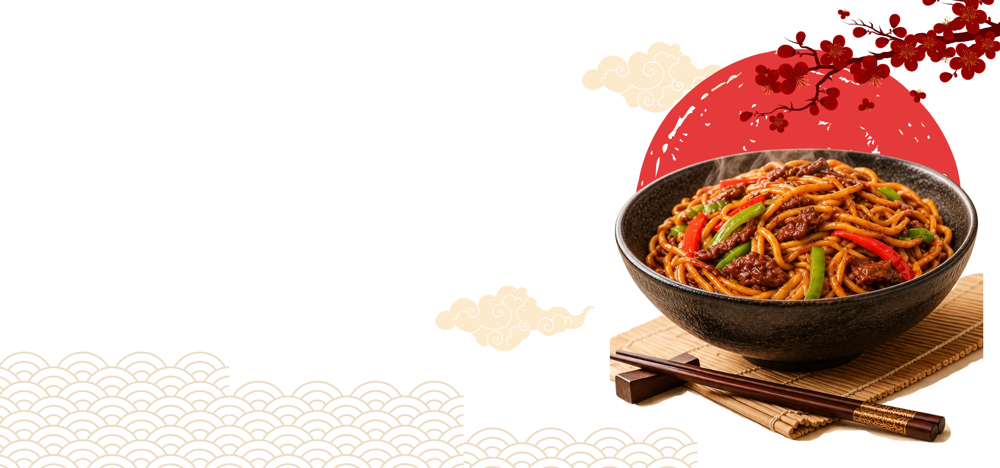
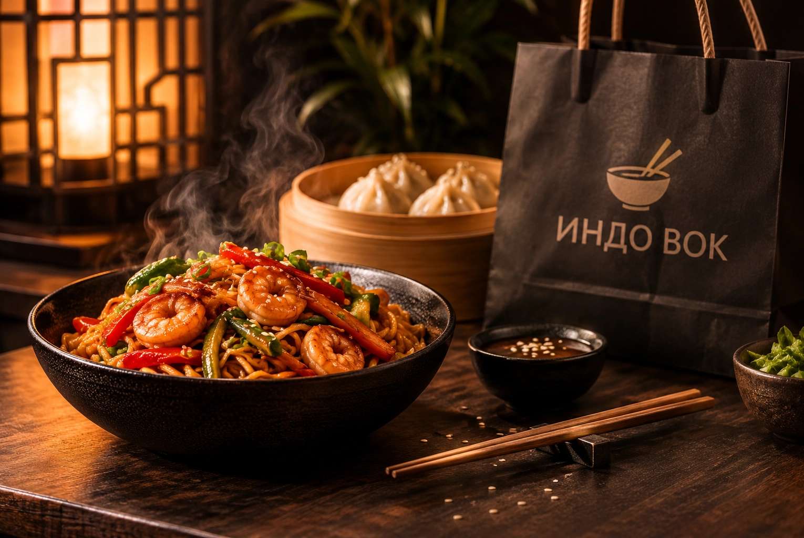

А
Александр
Дегустатор 3 уровня★★★★★
Заказывали говядину в перечном соусе и удон. Всё приехало хорошо упаковано, блюда вкусные. Удон особенно понравился.

Яркие сочетания, насыщенные соусы и блюда, вдохновлённые азиатской кухней.
Посмотреть менюЯркие вкусы, свежие ингредиенты и блюда, которые хочется попробовать снова.
Знакомые и новые вкусы азиатской кухни в одном меню.
Супы, лапша, горячие блюда, закуски и десерты.
Разнообразие ингредиентов, соусов и азиатских вкусов.

Наслаждайтесь любимыми блюдами ИНДО ВОК, не выходя из дома. Выбирайте то, что хочется сегодня, и оформляйте заказ онлайн.
Заказать доставку ↗Заказ онлайн
Приходите знакомиться с азиатской кухней и открывать для себя новые вкусы. Будем рады видеть вас!
Москва, ул. Нарвская, вл. 22
Нам важно, чтобы каждый заказ оставлял приятное впечатление